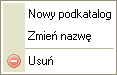

"Menu kontekstowe" to zestaw pozycji dostępnych po kliknięciu na wybrany obiekt prawym klawiszem myszy. Służy ono do wykonywania operacji specyficznych dla danego obiektu. Dostępne operacje zmieniają się w zależności od tego, co zostało wybrane.
Poniżej przedstawione zostały dostępne rodzaje menu, które mogą pojawić się podczas pracy z CKFinderem.
Pojawia się po kliknięciu w folder w oknie katalogów, przy użyciu prawego klawisza myszy:

Pojawia się po kliknięciu w folder w oknie plików, przy użyciu prawego klawisza myszy:
Pojawia się po kliknięciu w pustą przestrzeń w oknie plików, poza dostępnymi plikami (po kliknięciu w tło), przy użyciu prawego klawisza myszy: